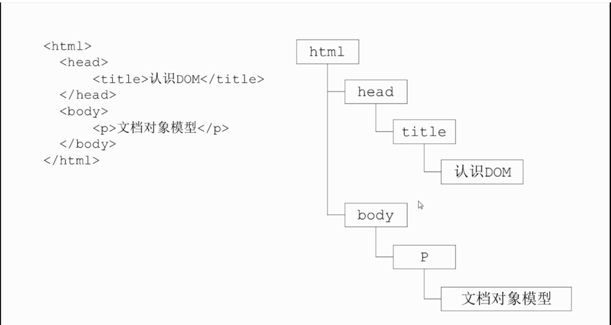
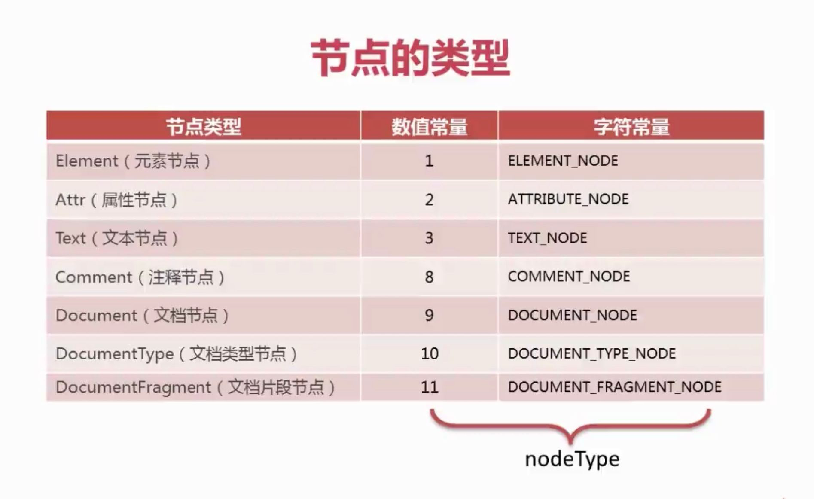
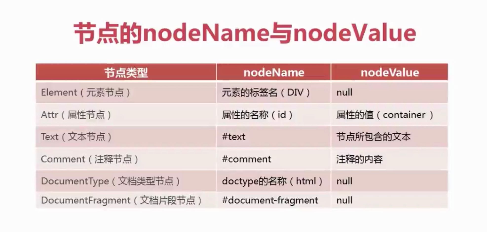

前端学习日记-log3
本文最后更新于：7 个月前
继续上次的地方继续往下学习
日志随笔
1. DOM热身案例——滑动门特效
代码已贴在上一篇文章里面，其中js中有个设置onmouseover的方法的逻辑，慕课网视频讲解中使用的是js的闭包函数循环设置的，可以参考注释掉的方法二，作为原生开发人员，我一开始不太理解这个闭包函数，认为可能会导致内存释放问题，这个疑问我先不去考虑了，先当做固定写法来使用，后面其他js课程再仔细理解
2. 了解DOM
Document Object Model文档对象模型，关键是理清标签节点

W3C万维网联盟
元素节点、属性节点、文本节点、文档节点、文档片段节点
3. 文档片段节点
createDocumentFragment方法创建文档片段节点，这个节点加入到文档中不会显示出来，属于占位用的
4. DOM的相关方法和属性
nodeType节点类型nodeName节点名称nodeValue节点值attributes属性节点数组childNodes子节点数组文本节点
#text注释节点
#comment空节点
doctype文档片段节点
#document-fragment


未完待续